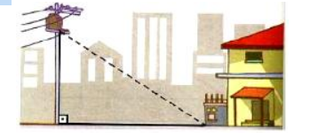
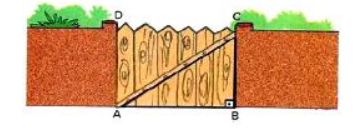
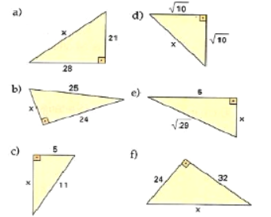
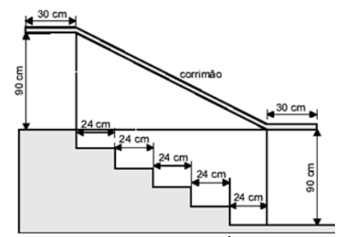

Quantos metros de fio são necessários para
"puxar luz" de um poste de 6 m de altura até a caixa
de luz que está ao lado da casa e a 8 m da base do
poste?

O portão de entrada de uma casa tem 4m de
comprimento e 3m de altura. Que comprimento
teria uma trave de madeira que se estendesse do
ponto A até o ponto C?

Aplicando o teorema de Pitágoras, determine a
medida x indicada em cada um dos triângulos:

O esquema abaixo representa o projeto de uma
escada de 5 degraus com mesma altura

De acordo com os dados da figura, qual é o
comprimento de todo o corrimão?